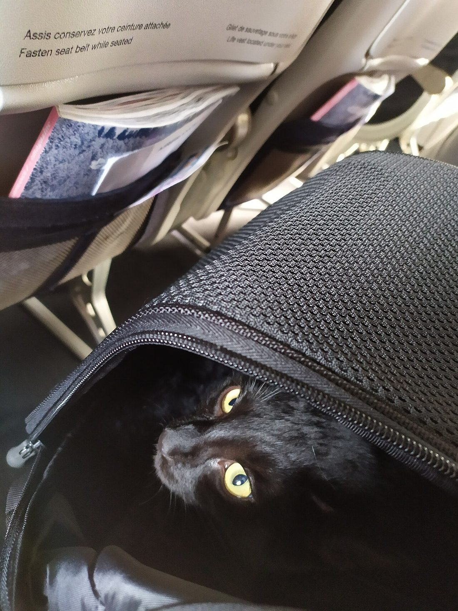

防災計畫裡，寵物常常是被最後才想到的一員——但對許多家庭來說，牠就是家人。戰爭或災害時，沒有事先準備，你可能被迫在「帶牠走」與「保命」之間做出殘忍的選擇。這篇幫你把毛小孩納入整個家庭的防災藍圖：從避難包、身分辨識，到疏散、收容與走失預防，讓你在關鍵時刻能帶著牠一起安全脫離。

最重要的一句話：如果情況危險到你必須撤離，那對寵物同樣危險。被獨自留在家裡的動物可能受困、脫水、受傷或走失，事後尋回機率也很低。因此規劃防災時，就把「帶寵物一起走」當成預設——真正需要時，才不會手足無措。撤離與否的判斷見〈該撤離還是就地避難〉。
當然，帶著寵物避難確實會增加負擔：多一份行李、移動變慢、收容選擇變少。但正因如此才更要事先準備——把寵物的裝備、去處、分工都提前想好，這些負擔就能大幅降低。臨時才手忙腳亂，或被迫拋下家人般的牠，代價遠比事前多花的一點心力沉重。把毛小孩視為家庭防災的正式一員，而不是最後才想到的附加項目。
比照人的〈緊急避難包〉，替寵物準備一份專屬的，放在一起、隨手可拿：
| 類別 | 準備項目 | 備註 |
|---|---|---|
| 食物飲水 | 數天份飼料、飲水、可折疊食器 | 飼料換牌子寵物可能不吃，備平常吃的 |
| 移動裝備 | 外出籠、牽繩、胸背帶 | 外出籠是進收容處所的必要條件 |
| 醫療 | 慣用藥、病歷影本、疫苗紀錄 | 拍照存手機各一份 |
| 排泄清潔 | 貓砂與貓砂盆、尿墊、清潔袋 | 維持衛生、避免異味與疾病 |
| 身分辨識 | 寵物照片、晶片與登記資料、名牌 | 走失協尋的關鍵 |
| 安撫 | 熟悉的玩具、毛毯 | 降低動物在陌生環境的焦慮 |
混亂中最容易發生的就是走失，而身分辨識決定了牠能不能回到你身邊：
很多收容處所不一定開放寵物入內，或另設動物安置區。別等到抵達現場才發現進不去，平時就先做功課：
很多貓狗一看到外出籠就抗拒躲藏，緊急時反而抓不到、塞不進去。平時就讓外出籠成為牠熟悉、甚至喜歡待的空間（放零食、毛毯、平常就開著讓牠進出），關鍵時刻才不會因為裝不進籠而錯過撤離時機。
若選擇留在家中避難（例如空襲進行中，見〈空襲警報應變〉）：
各種寵物的需求不同，避難時的注意事項也不一樣：
| 動物 | 移動與安置 | 特別注意 |
|---|---|---|
| 狗 | 牽繩＋胸背帶，大型犬備堅固牽引 | 巨響易受驚暴衝，牽繩要牢；備排泄清潔袋 |
| 貓 | 硬式外出籠，內鋪尿墊 | 貓易躲藏抓不到，平時就讓牠習慣籠子 |
| 鼠兔等小動物 | 透氣飼養箱，注意保溫通風 | 對溫度與緊迫敏感，避免悶熱與長時間震動 |
| 鳥 | 加布遮蓋的鳥籠降低緊迫 | 怕冷、怕吵、怕氣體，遠離煙塵 |
寵物防災的成敗，八成取決於平時的準備。趁現在把這幾件事做好：
先別慌。立即在走失地點附近仔細搜尋，貓常躲在附近隱蔽處而非跑遠；狗則可能循氣味或往熟悉方向移動。同時用手機裡的清晰照片張貼協尋、通報動物收容單位與鄰近動物醫院，並提供晶片號碼；晶片與寵物登記此時就是最重要的線索。留下有你或牠氣味的物品在走失處，有時能吸引牠回來。愈早行動，尋回機率愈高。
盡量不要。對你危險，對牠也危險；獨自留下易受困、脫水或走失。撤離時帶著走，事先備好籠與包。
數天份飼料飲水、外出籠與牽繩、慣用藥與病歷、排泄用品、身分資料與照片、安撫玩具。
晶片＋登記＋名牌，資料保持最新；外出務必牽繩或入籠，混亂中更要固定住牠。
不一定，規定各異。事先查好可收容寵物的地點、動物醫院與寄宿，並備外出籠。
帶到室內安全處、遠離窗戶，牽好或入籠，備妥飲水食物與排泄處，你冷靜牠也安定。
※ 本文為一般寵物防災參考，整理自農業部動物保護資訊網、Ready.gov、NCDR 等公開資訊，不能取代官方即時指示與獸醫專業建議。寵物用藥與健康問題請諮詢獸醫師。